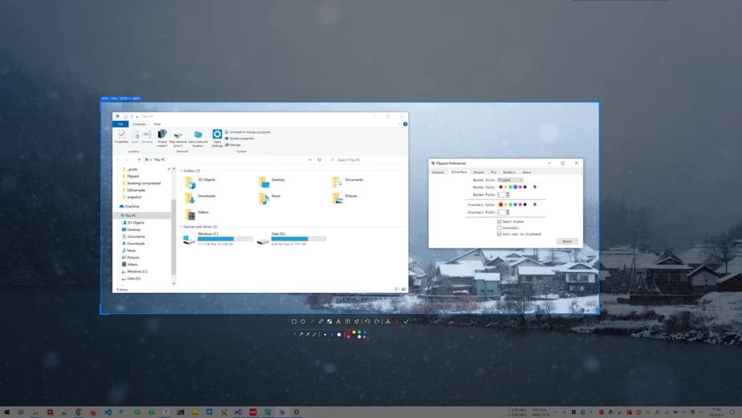

FLIPPED · 截图与贴图
谢谢你，
曾把它贴在桌面。
从截取一个区域，到把它钉在桌面上，FLIPPED 是我们第一次把截图和贴图做成一个完整流程。谢谢你陪它走过 Windows、macOS 和 Linux。
FLIPPED 已进入归档。Windows 用户推荐下载 SnipArc。

FLIPPED · 截图与贴图
从截取一个区域，到把它钉在桌面上，FLIPPED 是我们第一次把截图和贴图做成一个完整流程。谢谢你陪它走过 Windows、macOS 和 Linux。
FLIPPED 已进入归档。Windows 用户推荐下载 SnipArc。
